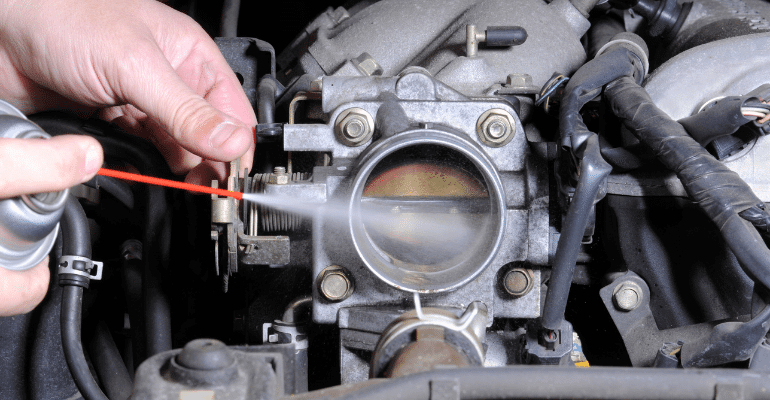
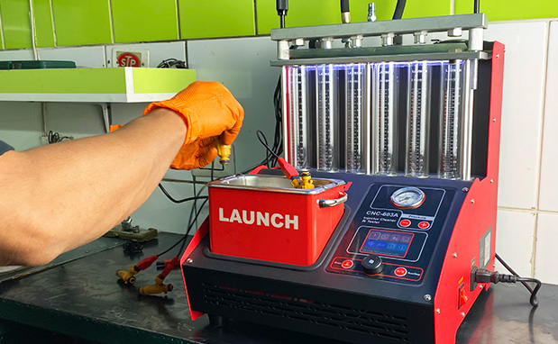
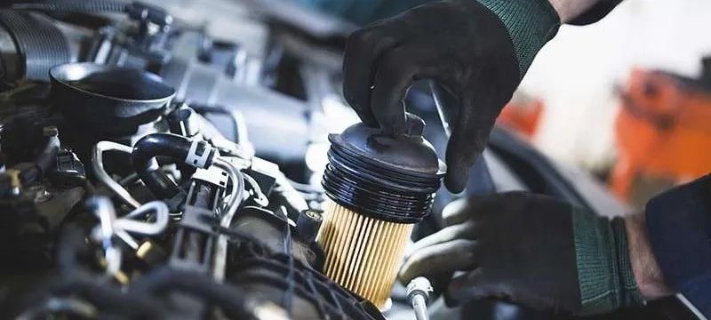
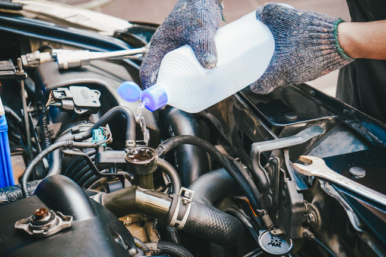
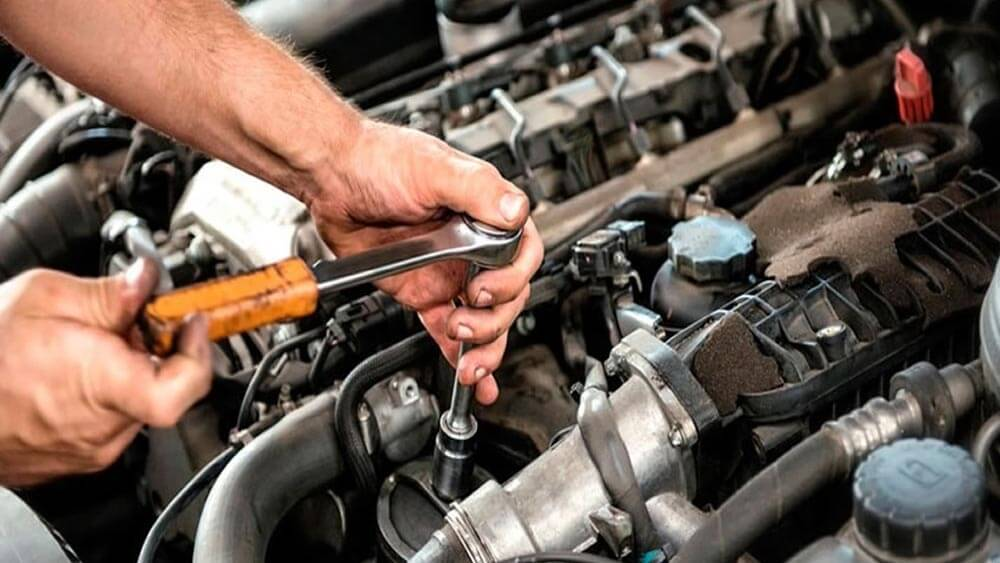
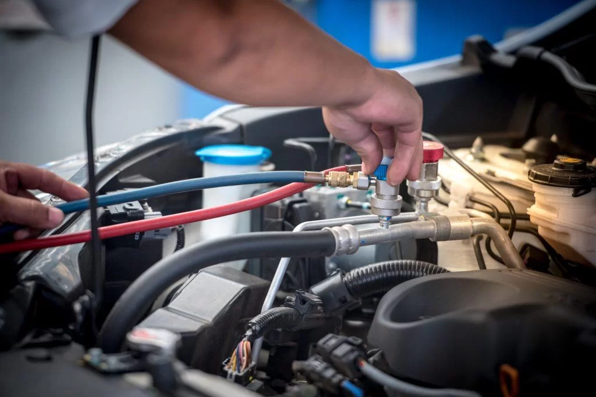
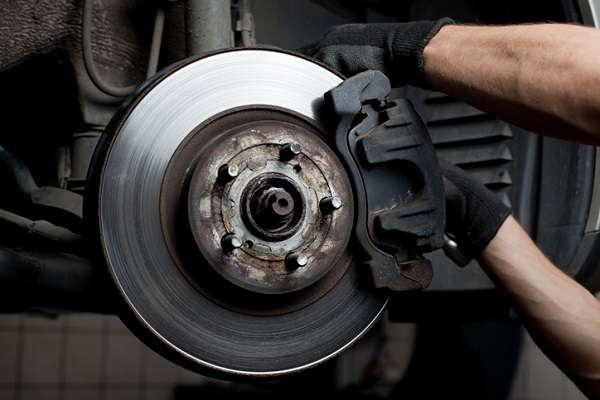

Limpieza y Calibración de Garganta de Aceleración
Limpieza de Inyectores
Afinación menor y mayor
Limpieza del sistema de refrigeración

|  | Limpieza y Calibración de Garganta de Aceleración |  | Limpieza de Inyectores |
|  | Afinación menor y mayor |  | Limpieza del sistema de refrigeración |
| Reparación de transmisiones automaticas y manuales |  | Reparación de motores |
|  | Reparación de transmisiones automaticas y manuales |  | Revisión de frenos |